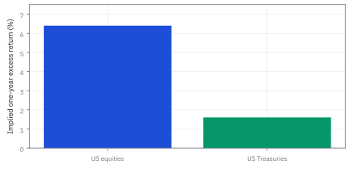
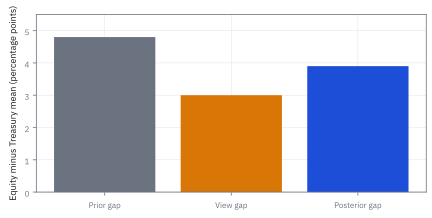
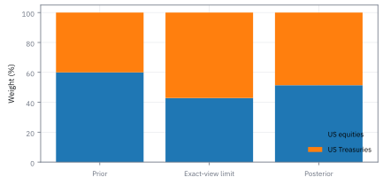
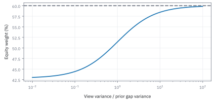
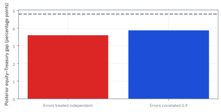

17.9 The Black-Litterman Model
เริ่มจากน้ำหนักอ้างอิง แล้วปรับด้วยมุมมองที่ยอมรับว่ามีความไม่แน่นอน
พอร์ตอ้างอิงถือหุ้น 60% พันธบัตร 40% ทุน \$10 ล้าน ทีมวิจัยคิดว่าหุ้นจะชนะพันธบัตร 3 จุดต่อปี แต่ไม่มั่นใจเต็มร้อย ควรเพิ่มหุ้นหรือลดหุ้น และเท่าไร?
เฉลย: ลดหุ้นเหลือ 51.43% ย้าย \$857,143 ไปพันธบัตร เพราะน้ำหนัก 60/40 บอกเป็นนัยว่าตลาดคาดส่วนต่าง 4.8 จุดอยู่แล้ว มุมมอง 3 จุดจึงมองหุ้นแย่กว่าตลาด ผสมตามความมั่นใจแล้วได้ 3.9 จุด
ศัพท์ที่ใช้ในหัวข้อนี้
- Black-Litterman
- กรอบผสมผลตอบแทนอ้างอิงที่ย้อนจากน้ำหนักตลาดกับมุมมองของผู้ลงทุน ใช้เปลี่ยนความเห็นบางส่วนให้เป็นค่าเฉลี่ยครบทุกสินทรัพย์
- prior
-
คืออะไร: ความเชื่อที่มีอยู่ก่อน ยังไม่ได้รวมมุมมองใหม่เข้าไป
ใช้ทำอะไร: ในหัวข้อนี้คือผลตอบแทนที่สอดคล้องกับน้ำหนักตลาดที่เป็นอยู่
ทำไมต้องเริ่มจากตลาด: เพราะการเริ่มจากค่าเฉลี่ยในอดีตให้พอร์ตที่สุดโต่งจนใช้ไม่ได้ การเริ่มจากสิ่งที่ตลาดเชื่ออยู่แล้ว ทำให้พอร์ตที่ได้ต่างจากตลาดเฉพาะตรงที่เรามีมุมมองจริง
- posterior
-
คืออะไร: ความเชื่อหลังผสมมุมมองใหม่เข้ากับความเชื่อเดิมแล้ว
ใช้ทำอะไร: เป็นตัวเลขที่เอาไปคำนวณน้ำหนักพอร์ตสุดท้าย
ทำไมถึงไม่ใช่แค่ค่าเฉลี่ยสองตัว: เพราะน้ำหนักที่ให้แต่ละฝั่ง ขึ้นกับว่าเรามั่นใจในมุมมองตัวเองแค่ไหน ยิ่งไม่มั่นใจ ผลลัพธ์ยิ่งใกล้ของเดิม ซึ่งเป็นพฤติกรรมที่ควรเป็น
- view
- เงื่อนไขเกี่ยวกับผลตอบแทนเฉลี่ยของสินทรัพย์เดี่ยวหรือส่วนต่างหลายสินทรัพย์ ใช้ใส่ความเห็นโดยไม่ต้องเดาค่าเฉลี่ยทุกตัว
- reverse optimization
- การย้อนหาผลตอบแทนเฉลี่ยที่ทำให้น้ำหนักอ้างอิงเป็นคำตอบของปัญหาเลือกพอร์ต ใช้สร้างจุดเริ่มต้นที่สอดคล้องกัน
- covariance
- matrix ที่เก็บการแกว่งร่วมของผลตอบแทนหรือความไม่แน่นอนของค่าเฉลี่ย ใช้วัดความเสี่ยงและน้ำหนักของข้อมูลแต่ต้องแยกสองบทบาท
- mean-variance
- กรอบเลือกน้ำหนักจากค่าเฉลี่ยผลตอบแทนและ variance ใช้แปลงค่าเฉลี่ยหลังปรับเป็นน้ำหนัก
- risk aversion
- coefficient ที่บอกว่าผู้ลงทุนลดคะแนนความพอใจเมื่อ variance เพิ่มมากเพียงใด ใช้กำหนดขนาดความเสี่ยงที่ยอมรับ
สัญลักษณ์ที่ใช้ในหัวข้อนี้
| สัญลักษณ์ | ความหมาย | หน่วย |
|---|---|---|
| $\Sigma$ | ตารางความเสี่ยงร่วมรายปีของสินทรัพย์ทั้งหมด | สัดส่วนกำลังสอง |
| $w_m$ | น้ำหนักตามขนาดตลาด คือพอร์ตที่ทุกคนถืออยู่รวมกัน | สัดส่วน |
| $\delta$ | ระดับความไม่ชอบเสี่ยงของตลาดโดยรวม ใช้แปลงน้ำหนักกลับเป็นผลตอบแทน | ผกผันสัดส่วน |
| $\Pi$ | ผลตอบแทนที่ต้องเป็นจริง ถ้าน้ำหนักตลาดข้างบนคือคำตอบที่ดีที่สุด คือความเชื่อตั้งต้น | สัดส่วน |
| $\mu$ | ผลตอบแทนส่วนเกินจริงที่ไม่มีใครรู้ เป็นสิ่งที่ทั้งหัวข้อนี้พยายามประมาณ | สัดส่วน |
| $\tau$ | ตัวคูณที่บอกว่าเราไม่มั่นใจในความเชื่อตั้งต้นแค่ไหน ยิ่งเล็กยิ่งเชื่อตลาด | ไม่มีหน่วย |
| $P$ | ตารางที่เขียนว่ามุมมองแต่ละข้อพูดถึงสินทรัพย์ตัวไหนบ้าง | ไม่มีหน่วย |
| $q$ | ตัวเลขที่มุมมองแต่ละข้ออ้าง เช่นตัวหนึ่งจะชนะอีกตัวอยู่สองเปอร์เซ็นต์ | สัดส่วน |
| $\Omega$ | ความไม่แน่นอนของมุมมองแต่ละข้อ ยิ่งใหญ่ยิ่งถูกละเลย | สัดส่วนกำลังสอง |
| $M$ | ตารางความเสี่ยงของค่าเฉลี่ยหลังผสมมุมมองแล้ว | สัดส่วนกำลังสอง |
| $w^*$ | น้ำหนักพอร์ตสุดท้ายที่ได้ ซึ่งต่างจากน้ำหนักตลาดเฉพาะตรงที่เรามีมุมมองจริง | สัดส่วน |
| $\epsilon$ | ความคลาดเคลื่อนของมุมมอง คือส่วนที่เรายอมรับว่าอาจคิดผิด | สัดส่วน |
ที่มาที่ไป: ทางแก้ที่คิดขึ้นในห้องค้าของ Goldman Sachs
Fischer Black กับ Robert Litterman เจอปัญหาเดียวกันตอนทำงานที่ Goldman Sachs ในช่วงปลายทศวรรษ 1980 คือทฤษฎีจัดพอร์ตให้คำตอบที่ไม่มีผู้จัดการกองทุนคนไหนยอมใช้
ปัญหาไม่ได้อยู่ที่คณิตศาสตร์ แต่อยู่ที่จุดตั้งต้น เพราะวิธีเดิมบังคับให้ต้องระบุผลตอบแทนคาดหวัง ของทุกสินทรัพย์ ทั้งที่เรามีความเห็นจริง ๆ แค่ไม่กี่ตัว
ทางแก้ของพวกเขากลับด้านคำถาม แทนที่จะเริ่มจากการเดา ให้เริ่มจากน้ำหนักตลาดที่เห็นอยู่ แล้วถามว่าตลาดกำลังบอกอะไรเป็นนัย จากนั้นค่อยปรับเฉพาะจุดที่เรามีความเห็นต่าง
ผลคือน้ำหนักที่ได้เบนออกจากตลาดเท่าที่ความเห็นของเรารองรับเท่านั้น ซึ่งเป็นสิ่งที่อธิบายให้คณะกรรมการฟังได้
เบื้องหลังแนวคิด: ทำไม Markowitz ถึงขยายความผิดพลาดและทางออกในทางปฏิบัติ
ในช่วงทศวรรษ 1980 วงการจัดการลงทุนพยายามนำทฤษฎี Mean-Variance ของ Harry Markowitz มาใช้งานจริง แต่พบอุปสรรคสำคัญทางสถิติ Richard Michaud (1989) ถึงกับขนานนามตัว optimizer แบบดั้งเดิมว่าเป็น error maximizer เพราะเมื่อใส่ค่าเฉลี่ยที่ประมาณจากข้อมูลย้อนหลัง ตัวแบบจะขยายความผิดพลาดให้รุนแรงขึ้นหลายเท่า
สาเหตุเกิดจากการคูณด้วย matrix ผกผัน $\Sigma^{-1}$ หากสินทรัพย์คู่ใดมีความเสี่ยงใกล้เคียงกัน ตัวแบบจะเทน้ำหนักมหาศาลไปยังสินทรัพย์ที่ผลตอบแทนประมาณการสูงเกินจริงเพียงเล็กน้อย และ short สินทรัพย์ข้างเคียงอย่างรุนแรง ผลลัพธ์ที่ได้คือพอร์ตสุดโต่งที่เสี่ยงสูงและไม่มีคณะกรรมการลงทุนคนใดยอมอนุมัติ
สไลด์ของคอร์สวางวิธีนี้ไว้เป็นทางแก้ที่สามของ estimation error ต่อจากการดึงค่าเฉลี่ยเข้าหาค่าเฉลี่ย และการใส่ข้อจำกัดในหัวข้อ 17.8 คือเริ่มจากดุลยภาพของตลาด แล้วใส่ความเห็นพร้อมความไม่แน่นอนของมัน
ในยุคนั้น ผู้จัดการกองทุนแก้ปัญหาเฉพาะหน้าด้วยการตั้งกรอบบังคับ เช่น ห้าม short หรือล็อกน้ำหนักไม่ให้เกิน 10% ซึ่งเป็นการฝืนกลไกทางคณิตศาสตร์ จนกระทั่ง Fischer Black และ Robert Litterman (1991, 1992) เสนอให้ใช้หลักการ Bayesian ผสมพอร์ตดุลยภาพตลาดเป็น prior แล้วเปิดให้ใส่มุมมองเฉพาะจุด ผลลัพธ์จึงมีเสถียรภาพและอธิบายได้
ของที่โจทย์ให้ — Worked Example — เริ่มจาก 60/40 แล้วใส่มุมมองอย่างมีเบรก
โจทย์เริ่มจาก reference portfolio หุ้น 60% และ Treasury 40% พร้อม covariance รายปี แล้วถามว่า expected return แบบไหนทำให้น้ำหนักนี้สมเหตุผลภายใต้ risk-aversion coefficient 2.5
จากนั้นเราใส่มุมมองว่า “หุ้นจะชนะ Treasury 3 จุด” พร้อมตัวเลขบอกความไม่มั่นใจ แล้วดูว่าน้ำหนักใหม่ขยับเท่าไร 60/40 เป็นเพียงจุดอ้างอิงของโจทย์ ไม่ได้อ้างว่าเป็นน้ำหนักตลาดโลก และผลตอบแทนทั้งหมดเป็นส่วนเกินเงินสด จึงไม่บวก rate ซ้ำ
ขั้นที่ 1 — ย้อนจากเงื่อนไขอันดับหนึ่ง
แทนที่จะเดาผลตอบแทนคาดหวังเอง เราถามกลับว่าน้ำหนักตลาดที่เห็นอยู่ สื่อว่าตลาดคาดหวังอะไร นี่คือจุดตั้งต้นที่มั่นคงกว่าการเดา
แบบตั้งต้นอนุญาตให้ส่วนที่เหลืออยู่ในเงินสด จึงยังไม่บังคับน้ำหนักสินทรัพย์เสี่ยงรวมหนึ่ง การตั้งผลตอบแทนเช่นนี้ทำให้แก้กลับมาได้น้ำหนักอ้างอิงเดิม
การพิสูจน์เงื่อนไข First-Order และที่มาของระดับความเกลียดความเสี่ยง
การหาผลตอบแทนดุลยภาพหรือ reverse optimization เป็นหัวใจสำคัญที่ Black-Litterman ใช้เปลี่ยนทิศทางการคำนวณ แทนที่จะประมาณผลตอบแทนจากข้อมูลย้อนหลังซึ่งมี noise สูง เรามองย้อนกลับว่าถ้านักลงทุนทุกคนในตลาดพอใจกับน้ำหนัก $w_m$ แล้ว ผลตอบแทนส่วนเกินที่ตลาดสะท้อนอยู่อย่างสมดุลควรเป็นเท่าใด
ตัวคูณ $\delta = 2.5$ ในโจทย์ไม่ได้ถูกกำหนดขึ้นลอย ๆ แต่สอดคล้องกับพอร์ตผสมที่มีผลตอบแทนส่วนเกิน $4.48\%$ ต่อปีและความผันผวนราว $13.39\%$ ต่อปี ซึ่งสะท้อนระดับราคาของความเสี่ยงในตลาดจริง
ตั้งต้นจากเป้าหมายกำลังสองของ Markowitz ที่ชั่งน้ำหนักระหว่างผลตอบแทนกับความเสี่ยง หา derivative เทียบกับ vector น้ำหนัก $w$ โดยใช้สมมาตรของ covariance matrix จะได้เงื่อนไขที่เกรเดียนต์เป็นศูนย์
ในภาวะดุลยภาพ นักลงทุนทั้งตลาดต้องถือครองสินทรัพย์รวมกันจนเท่ากับพอร์ตตลาด $w_m$ เมื่อแทน $w^* = w_m$ จึงได้สูตรคำนวณผลตอบแทนชดเชยดุลยภาพ $\Pi$ กลับออกมาโดยไม่ต้องเดา
คูณ $w_m^\top$ ทั้งสองข้างเพื่อยุบสมการให้เป็นค่า scalar ตัวเดียว จะเห็นว่า risk aversion $\delta$ คืออัตราส่วนระหว่างผลตอบแทนส่วนเกินตลาดต่อ variance ตลาด แทนตัวเลขตัวอย่างได้ $\delta = 2.5$ พอดี
ขั้นที่ 2 — คำนวณผลตอบแทนอ้างอิง
เริ่มจากน้ำหนักตลาด แล้วถามกลับว่าผลตอบแทนคาดหวังชุดไหนจึงจะทำให้น้ำหนักนั้นเป็นคำตอบที่ดีที่สุด คูณ covariance กับน้ำหนักก่อน แล้วค่อยคูณด้วยระดับความเกลียดความเสี่ยง
$\Pi$ คือผลตอบแทนที่ตลาดกำลังบอกเป็นนัย ไม่ใช่การพยากรณ์ของเรา หุ้นได้ 6.4% ต่อปีและ bond ได้ 1.6% ต่อปี
แล้วเอาไปใช้ทำอะไรได้จริงบ้าง
การเริ่มจากน้ำหนักตลาดแล้วปรับด้วยมุมมองที่มีน้ำหนัก แก้ปัญหาน้ำหนักสุดโต่งได้ตรงจุด
ใช้แปลงมุมมองของทีมวิจัยให้กลายเป็นพอร์ตจริง โดยไม่ทำให้น้ำหนักเพี้ยนไปทั้งกอง
ใช้ผสมมุมมองจากหลายทีมเข้าด้วยกัน โดยถ่วงตามความมั่นใจของแต่ละมุมมอง
ใช้อธิบายให้คณะกรรมการเข้าใจว่าทำไมพอร์ตถึงเบนไปจากดัชนีอ้างอิงเท่านี้ ไม่ใช่มากกว่านี้
Figure 17.9a — ผลตอบแทนที่ย้อนมาจากจุดอ้างอิง

แท่ง 6.4% และ 1.6% ทำให้น้ำหนัก 60/40 เป็นคำตอบตาม covariance และ coefficient ที่กำหนด การเปลี่ยนสมมติฐานเหล่านี้เปลี่ยนทั้งสองแท่งได้
ขั้นที่ 3 — ระบุความไม่แน่นอนสองฝั่ง
ทั้งค่าตั้งต้นและมุมมองของเราต่างก็ไม่แน่นอน ต้องระบุความไม่แน่นอนของทั้งสองฝั่ง เพราะอัตราส่วนของมันคือสิ่งที่กำหนดว่าจะเชื่อใครมากกว่า
สมมติความผิดพลาดมุมมองเป็นอิสระจากความไม่แน่นอน prior ค่า covariance ของค่าเฉลี่ยคือ tau คูณ Sigma
ส่วน Sigma เองเป็น covariance ของผลตอบแทน จึงไม่ใช่ปริมาณเดียวกัน
ตีความความเห็นก่อนปรับน้ำหนัก
prior ให้หุ้นเหนือพันธบัตร 4.8 จุดเปอร์เซ็นต์ แต่มุมมองให้เพียง 3 จุดเปอร์เซ็นต์ ดังนั้นความเห็นว่า 'หุ้นจะดีกว่า' กลับทำให้ลดน้ำหนักหุ้นเมื่อเทียบกับจุดอ้างอิง ต้องเทียบกับสิ่งที่ถูกสะท้อนอยู่ก่อนแล้ว
ขั้นที่ 4 — รวมข้อมูลด้วยความแม่นของแต่ละฝั่ง
คำตอบสุดท้ายคือ ผลตอบแทนที่ตลาดบอกเป็นนัย บวกกับการปรับตามน้ำหนักความเชื่อ ตัวปรับคือส่วนต่างของ view หารด้วยความไม่แน่นอนรวม
ตัวคูณ $-4.285714$ เป็นลบเพราะ view มองส่วนต่างต่ำกว่าที่ตลาดบอก จึงกดผลตอบแทนของหุ้นลงและดันของ bond ขึ้น
สังเกตว่าทั้งสองตัวขยับ ทั้งที่ view พูดถึงแค่ผลต่าง เพราะ covariance เชื่อมสองตัวเข้าด้วยกัน นี่คือจุดเด่นของ Black-Litterman เทียบกับการแก้ตัวเลขคาดการณ์ด้วยมือ
อ่านเป็นค่าเฉลี่ยถ่วงด้วยความแม่น: ส่วนต่างหลังผสม $=4.8+(3.0-4.8)\times\frac{0.0021}{0.0042}=4.8-0.9=3.9$ จุดเปอร์เซ็นต์ น้ำหนักของ view คือ variance ของ prior หารด้วยผลรวม variance สองฝั่ง เหมือน Bayes ของหัวข้อ 1.7 ที่หลักฐานสองชิ้นถ่วงด้วยความแม่นของแต่ละชิ้น ถ้า $\Omega$ ใหญ่กว่านี้สิบเท่า น้ำหนักเหลือ $0.0021/0.0231=0.09$ และส่วนต่างขยับแค่ 0.16 จุด
ขั้นที่ 5 — นิยามของรูปที่อ่านง่าย: ค่าตั้งต้นบวกการปรับ
บรรทัดนี้เป็นการเขียนผลของขั้นก่อนหน้าใหม่ให้อ่านง่ายขึ้น ไม่ใช่ผลใหม่ อ่านจากขวาไปซ้าย: ก้อนขวาสุดคือความต่างระหว่างมุมมองของเรากับสิ่งที่ตลาดบอกอยู่แล้ว ถ้าสองอย่างตรงกัน ก้อนนี้เป็นศูนย์ และค่าเฉลี่ยไม่ขยับเลย ซึ่งเป็นการตรวจที่ควรทำก่อนอื่น ก้อนกลางคือการชั่งน้ำหนักว่าจะเชื่อมุมมองแค่ไหน โดยเทียบความไม่แน่นอนของมุมมอง กับความไม่แน่นอนของค่าเฉลี่ยตลาด ส่วนก้อนซ้ายแปลงผลกลับมาเป็นภาษาของสินทรัพย์ทุกตัว ประโยชน์ของรูปนี้คือต้องกลับตารางขนาดเท่าจำนวนมุมมองเท่านั้น ซึ่งมักมีไม่กี่ข้อ
รูปนี้คำนวณโดยแก้ระบบขนาดเท่าจำนวนมุมมอง ลดการกลับ matrix ขนาดสินทรัพย์โดยตรง และแสดงชัดว่าหากมุมมองตรงกับ prior ค่าเฉลี่ยไม่ขยับ
ให้ $A=\tau\Sigma$ เป็น covariance ของความไม่แน่นอนในค่าเฉลี่ยและให้ error ของ view เป็นอิสระจากค่าเฉลี่ยภายใต้แบบจำลอง Gaussian ค่าเฉลี่ยหลังเห็น view เป็นจุดต่ำสุดของ $J(m)=(m-\Pi)^\mathsf{T}A^{-1}(m-\Pi)/2+(q-Pm)^\mathsf{T}\Omega^{-1}(q-Pm)/2$ เพราะ posterior density แปรตาม $e^{-J(m)}$ และเป็น Normal
หา derivative แล้วตั้งศูนย์ได้ $A^{-1}(m-\Pi)-P^\mathsf{T}\Omega^{-1}(q-Pm)=0$ ตรวจคำตอบโดยให้ $h=(P\,A\,P^\mathsf{T}+\Omega)^{-1}(q-P\Pi)$ และ $m=\Pi+A\,P^\mathsf{T}h$ จะได้ $A^{-1}(m-\Pi)=P^\mathsf{T}h$
อีกข้างมี $q-Pm=(q-P\Pi)-P\,A\,P^\mathsf{T}h=(P\,A\,P^\mathsf{T}+\Omega)h-P\,A\,P^\mathsf{T}h=\Omega h$ จึงให้ $P^\mathsf{T}\Omega^{-1}(q-Pm)=P^\mathsf{T}h$ เท่ากันพอดี และ curvature เป็น positive definite เมื่อ $A,\Omega$ positive definite จึงเป็นคำตอบต่ำสุดหนึ่งเดียว
การพิสูจน์สูตรปรับค่าเฉลี่ยจาก Gaussian Conditioning
สูตรปรับค่าเฉลี่ยของ Black-Litterman มีรากฐานมาจาก Bayesian inference โดยตรง ก้อน $(q - P\Pi)$ ทำหน้าที่วัดความประหลาดใจหรือ innovation หากมุมมองของเราสอดคล้องกับสิ่งที่ตลาดบอกอยู่แล้ว ก้อนนี้จะเป็นศูนย์และไม่เปลี่ยนค่าเฉลี่ยเดิม
ส่วนก้อนกลาง $(P\tau\Sigma P^\top + \Omega)^{-1}$ ทำหน้าที่เป็นตัวกรองความเชื่อมั่น หากเราไม่มั่นใจในมุมมองเลยจน $\Omega \to \infty$ ตัวคูณนี้จะลดลงจนกลายเป็นศูนย์ ทำให้แบบจำลองกลับไปถือพอร์ตตลาดโดยอัตโนมัติ ไม่เกิดความผันผวนของน้ำหนักเหมือนวิธีดั้งเดิม
มอง vector ค่าเฉลี่ยจริง $\mu$ และค่ามุมมองที่สังเกตได้ $q$ เป็นตัวแปรร่วมใน multivariate normal distribution โดยมุมมอง $q$ มีจุดกึ่งกลางที่ $P\Pi$ ตามข้อมูลก่อนหน้า
ความเชื่อมโยงระหว่าง $\mu$ กับ $q$ ส่งผ่านทาง covariance $\tau\Sigma P^\top$ ขณะที่ variance ทั้งหมดของมุมมองประกอบด้วยความไม่แน่นอนของตลาด $P\tau\Sigma P^\top$ บวกกับความไม่แน่นอนของมุมมอง $\Omega$
เมื่อใช้สูตร conditional expectation ของ Gaussian distribution ค่าเฉลี่ยใหม่จะแยกออกเป็นสองก้อนชัดเจน คือจุดตั้งต้นเดิม $\Pi$ บวกกับแรงดึงจากส่วนต่าง $(q - P\Pi)$ ที่ถ่วงน้ำหนักด้วยความแม่นยำ
ขั้นที่ 6 — แทนความเชื่อมั่นที่ระบุเป็น variance
view หนึ่งข้อคือ ส่วนต่างของสองสินทรัพย์จะเท่ากับ 3% จึงต้องคำนวณว่า view นี้แตะ covariance อย่างไร
$P=\begin{bmatrix}1&-1\end{bmatrix}$ แปลว่า view พูดถึงผลต่างของสองตัว การคูณด้วย $P^\top$ จึงเป็นการเอาคอลัมน์แรกลบคอลัมน์ที่สอง
ตลาดบอกเป็นนัยว่าส่วนต่างคือ 4.8% แต่ view ของเราบอก 3% จึงต่างกัน $-1.8$ จุด ซึ่งเป็นแรงที่จะดึงคำตอบให้ขยับ
$\Omega$ ตั้งเท่ากับ $P\tau\Sigma P^\top$ พอดี แปลว่าเราเชื่อ view เท่า ๆ กับที่เชื่อตลาด
ขั้นที่ 7 — ค่าเฉลี่ยใหม่และน้ำหนักใหม่
แปลงผลตอบแทนที่ปรับแล้วกลับเป็นน้ำหนักพอร์ต ซึ่งเป็นสิ่งที่เอาไปสั่งซื้อขายได้จริง
ผลตอบแทนส่วนเกินหลังปรับประมาณ 5.6286% กับ 1.7286%
ส่วนต่างเป็น 3.9 จุดเปอร์เซ็นต์ น้ำหนักหุ้นลดจาก 60% เหลือ 51.4286% ในตัวอย่างที่ใช้ covariance ผลตอบแทนเดิม
น้ำหนักด้วยมือ: $w^*=\Sigma^{-1}(\mu_{\rm post}/2.5)$ และ $\mu_{\rm post}/2.5=(0.0225143,\ 0.0069143)$ ใช้ $\Sigma^{-1}$ ของหัวข้อ 17.3: $w_1=26.0417(0.0225143)-10.4167(0.0069143)=0.5863-0.0720=0.5143$ และ $w_2=-10.4167(0.0225143)+104.1667(0.0069143)=-0.2345+0.7202=0.4857$ รวมเป็นหนึ่งพอดี
การแยกน้ำหนักพอร์ต: พอร์ตตลาดบวก Active Tilt และ Covariance หลังเห็นข้อมูล
โครงสร้างนี้เผยความงามของ Black-Litterman: ผู้จัดการกองทุนไม่ต้องแก้ปัญหาการจัดพอร์ตใหม่ทั้งหมด แต่เริ่มต้นด้วยพอร์ตดุลยภาพตลาดเป็นฐาน แล้วเพิ่ม overlay ที่เป็น dollar-neutral ตามแนวแกนของมุมมองเท่านั้น
ผลรวมของ active tilt เป็นศูนย์เสมอ ทำให้การปรับพอร์ตไม่กระทบงบประมาณรวม และ matrix $M$ ยืนยันว่าการรับฟังข้อมูลใหม่ช่วยลด parameter uncertainty ในระบบลงอย่างเป็นระบบ
เมื่อกระจาย $\Sigma^{-1}$ เข้าไปในสูตรผลตอบแทน พจน์ $\Sigma^{-1}\Sigma$ จะตัดกันเป็น identity matrix ทำให้พอร์ตเป้าหมายแยกเป็นพอร์ตตลาด $w_m$ บวกกับ active tilt เสมอ
สำหรับ relative view น้ำหนักของ tilt แต่ละสินทรัพย์จะหักล้างกันเองเป็นศูนย์พอดี ทำให้ผลรวมน้ำหนักของพอร์ตยังคงเท่ากับหนึ่งโดยไม่ต้องปรับสัดหารด้วยมือ
matrix $M$ วัดความไม่แน่นอนที่เหลืออยู่ในค่าเฉลี่ย สังเกตว่าค่า variance บนแนวทแยงลดลงจากเดิมเพราะได้ข้อมูลจากมุมมองเพิ่ม และ predictive covariance รวมความเสี่ยงของ parameter เข้าไปด้วย
Figure 17.9b — ความเห็นใหม่อยู่ห่างจากสิ่งที่เชื่อเดิม

ส่วนต่างหลังปรับ 3.9 จุดเปอร์เซ็นต์อยู่กึ่งกลาง 4.8 และ 3.0 เพราะ variance ของสองแหล่งเท่ากันสำหรับมุมมองนี้ ไม่ใช่เพราะ Black-Litterman ต้องเฉลี่ยครึ่งหนึ่งเสมอ
Figure 17.9c — จาก prior ผ่าน view ไปยังน้ำหนัก

น้ำหนักฝั่ง view-only ในภาพคือขีดจำกัดที่บังคับส่วนต่าง 3% แน่นอนพร้อมคงโครงสร้าง prior ส่วนที่ไม่ถูกมอง ไม่ใช่น้ำหนักที่ view เดี่ยวระบุได้ลำพัง น้ำหนักหลังผสมจึงอยู่ระหว่างกรณีอ้างอิงกับขีดจำกัดนี้
Figure 17.9d — ความไม่แน่นอนมากทำให้กลับหาจุดอ้างอิง

เพิ่มอัตราส่วน view variance ต่อ prior แล้วน้ำหนักหุ้นกลับใกล้ 60% เส้นนี้แสดงความไวต่อสมมติฐานความมั่นใจ ไม่ใช่ความน่าจะเป็นว่าความเห็นถูก
Figure 17.9e — มุมมองซ้ำไม่ควรถูกนับเป็นพยานอิสระ

ใช้มุมมองส่วนต่างหุ้นกับพันธบัตร 3% ซ้ำสองบรรทัด หากถือว่าความผิดพลาดเป็นอิสระ posterior จะเคลื่อนมากเกินกรณีที่ความผิดพลาดของสองบรรทัดมี correlation 0.9 ตัวอย่างนี้ชี้ว่าช่องนอกแนวทแยงของ Omega เป็นข้อมูลทางเศรษฐศาสตร์ ไม่ใช่รายละเอียดตกแต่งของ matrix
น้ำหนักเป้าหมายยังไม่ใช่การซื้อขาย
Black-Litterman ส่งค่าเฉลี่ยและน้ำหนักเชิงกลยุทธ์ที่ต้องผ่านข้อจำกัด turnover, ราคาที่ซื้อขายได้, ต้นทุนการซื้อขาย และเวลาส่งคำสั่งก่อนกลายเป็น P&L หัวข้อถัดไปของหนังสือจึงย้ายจาก portfolio construction ไปยังการตั้งราคาและ market microstructure ซึ่งเป็นจุดที่ model weight พบต้นทุนของตลาดจริง
คำตอบ — มุมมองว่าหุ้นดีกว่า แต่ลดหุ้น
คำถาม: พอร์ตอ้างอิงถือหุ้น 60% พันธบัตร 40% ทุน \$10 ล้าน ทีมวิจัยคิดว่าหุ้นจะชนะพันธบัตร 3 จุดต่อปี แต่ไม่มั่นใจเต็มร้อย ควรเพิ่มหุ้นหรือลดหุ้น และเท่าไร?
ของที่มี: ขั้นที่ 1 ถึง 7
1 ย้อนจากน้ำหนัก 60/40 ด้วย $\delta=2.5$ ได้ผลตอบแทนส่วนเกินที่ตลาดบอกเป็นนัย 6.4% และ 1.6% ส่วนต่าง 4.8 จุด
2 มุมมองบอก 3 จุด ความไม่แน่นอนของมุมมองเท่ากับของตลาด ผสมได้ส่วนต่าง 3.9 จุด คือ 5.63% และ 1.73%
3 น้ำหนักใหม่คือหุ้น 51.43% พันธบัตร 48.57% หุ้นเหลือ \$5,142,857 พันธบัตร \$4,857,143
ตรวจเองใน 10 วินาที: 4.8 + (3.0 − 4.8)(0.5) = 3.9 และ 0.6 − 0.0857 = 0.5143
แปลว่าอะไร: มุมมองต้องเทียบกับสิ่งที่ราคาสะท้อนอยู่แล้ว ไม่ใช่เทียบกับศูนย์ คำว่าหุ้นจะดีกว่าจึงอาจแปลว่าลดหุ้น และการเบนจากพอร์ตอ้างอิงถูกจำกัดด้วยความมั่นใจที่ประกาศ อธิบายต่อคณะกรรมการได้ทีละบรรทัด
ใส่สูทให้ความเห็นแล้วก็ยังเป็นความเห็น
Black-Litterman ทำให้ความเห็นเดินเข้าห้องประชุมพร้อมสมการ แต่ไม่ได้ทำให้ความเห็นถูก ต้องแยก M ซึ่งวัดความไม่แน่นอนของค่าเฉลี่ยออกจาก covariance พยากรณ์ผลตอบแทนที่อาจใช้ Sigma บวก M การเลือกแบบหลังจะเปลี่ยนน้ำหนักจากที่คำนวณที่นี่ และมุมมองที่สัมพันธ์กันต้องมีช่องนอกแนวทแยงใน Omega
ข้อจำกัด: วิธีนี้สมมติอะไร และของจริงเป็นอย่างไร
| เรื่อง | วิธีนี้สมมติว่า | ของจริงเป็นอย่างไร | ผลที่ตามมาเวลาใช้งาน |
|---|---|---|---|
| น้ำหนักตลาด | น้ำหนักตลาดเป็นจุดตั้งต้นที่ดี | จริงสำหรับหุ้น แต่ไม่ชัดสำหรับสินทรัพย์อื่น | การใช้กับสินทรัพย์ที่ไม่มีน้ำหนักตลาดที่ชัดเจนต้องตั้งจุดตั้งต้นเอง |
| ความมั่นใจ | ระบุความมั่นใจของมุมมองได้เป็นตัวเลข | คนระบุความมั่นใจของตัวเองได้ไม่ดี | ผลลัพธ์ไวต่อตัวเลขนี้มาก และมันเป็นตัวเลขที่เดาเอาทั้งหมด |
| ความเป็นกลาง | จุดตั้งต้นเป็นกลาง | การเลือกดัชนีอ้างอิงเป็นการตัดสินใจอยู่แล้ว | ความเป็นกลางที่อ้างนั้นสัมพันธ์กับดัชนีที่เลือก ไม่ใช่เป็นกลางจริง |
แถวกลางเป็นจุดอ่อนที่ใหญ่ที่สุดในทางปฏิบัติ และมักแก้ด้วยการทดสอบหลายค่าแล้วดูว่าผลเปลี่ยนแค่ไหน
คำนวณซ้ำได้
import numpy as np
S=np.array([[.04,.004],[.004,.01]]);wm=np.array([.6,.4]);lam=2.5;tau=.05
pi=lam*S@wm;P=np.array([[1.,-1.]]);q=np.array([.03]);v=float((P@(tau*S)@P.T)[0,0]);omega=v
post=pi+(tau*S)@P.T@np.linalg.solve(P@(tau*S)@P.T+np.array([[omega]]),q-P@pi)
w=np.linalg.solve(lam*S,post)
assert np.allclose(pi,[.064,.016])
assert np.allclose(post,[.0562857142857,.0172857142857])
assert np.allclose(w,[.5142857142857,.4857142857143])
assert abs(float((P@post)[0])-.039)<1e-12
M=np.linalg.inv(np.linalg.inv(tau*S)+P.T@P/omega)
assert np.linalg.eigvalsh(M).min()>0
print('USD targets:',w*1e7)โค้ดนี้ตรวจตัวเลขจากสมมติฐานในตัวอย่าง ใช้ Python ร่วมกับ NumPy และ SciPy
สรุปที่ใช้ได้จริง
- เริ่มจากน้ำหนักและสมมติฐานที่ประกาศ ไม่เรียกน้ำหนักอ้างอิงเฉพาะบัญชีว่าตลาดโลก
- มุมมองต้องระบุทั้งค่าและความไม่แน่นอน แล้วเทียบกับ prior
- แยก covariance ของผลตอบแทน ของค่าเฉลี่ย และของมุมมองก่อนส่งค่าให้ optimizer